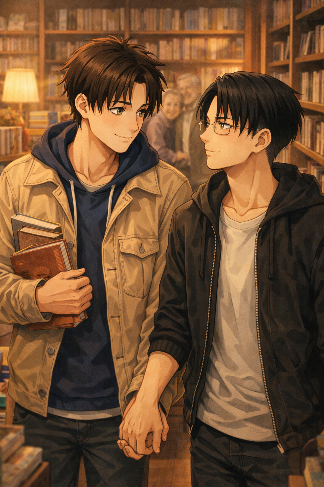

A Perfect Day
Levi — POV

Levi had been doing absolutely nothing.
Warm water. Steam clinging to the walls. His head resting against the edge of the tub, thoughts loose, body heavy in the good way.
He was halfway to drifting when the door flew open.
“Levi!”
He didn’t even flinch. He just looked up to meet his other half's eyes.
“I’m running out of everything,” Eren announced, already halfway into the room, gesturing wildly like this was an emergency. “Books. New ones. The good ones. I can’t function like this.”
Levi cracked one eye open.
“You have a pile by the bed,” he said. “Another by the couch. And one on the chair you refuse to move.”
“Those don’t count,” Eren replied immediately. “I’ve already read them. We haven't read anything new in a while. Come on.”
Levi closed his eyes again.
“You’re unbelievable.”
Eren leaned against the doorframe, calmer now, voice softer, like he always got when he talked about this.
“Reading is important,” he said. “It helps you develop things. Empathy. Imagination. Opinions. Critical thinking. And also—” he hesitated, then smiled, “it’s a nice way to disconnect from reality.”
Levi hummed. That part, he understood.
He opened his eyes just long enough to look at him.
“It’s freezing outside,” he warned.
“I know,” Eren said brightly. “Which is why we’re getting coffee first. Then the bookstore. And then you’re not allowed to complain.”
Levi sank a little deeper into the water, already resigned. He had already planned his day with Eren. In bed.
He’d barely dried off, and somehow, the day was already decided.
He said it like a plan. Which meant it was already happening.
The café was warm in the good way — fogged windows, low chatter, the smell of coffee clinging to everything.
Levi barely had time to take his coat off before Eren was already scanning the menu, bouncing slightly on his feet like this place mattered.
“Okay,” Eren said, pointing, “so. There’s no coxinha.”
Levi watched his face fall, just a little.
“Tragic,” Levi replied.
“It is,” Eren agreed seriously. “But they have pão de queijo. And listen — pão de queijo with coffee? That’s elite.”
He turned to Levi like he was sharing classified information.
“Trust me.”
Levi did.
They sat by the window, cups warm between their hands, Eren already tearing into the pão de queijo like he’d been thinking about it all morning.
He talked through bites — about Brazil, about food he still wanted Levi to try, about how unfair it was that good coffee tasted better when it came with stories attached.
He lined up cans of guaraná on the table like trophies.
“These are coming home with us,” he announced.
Levi watched him, the easy enthusiasm, the way he looked completely at home in moments like this.
Levi watched him. Always did.
When Eren finished his coffee, he stood up decisively, grabbed his coat, and tugged Levi by the sleeve.
“Okay,” he said, grinning. “Now I’m taking you with me.”
The bookstore.
The moment they stepped inside, something in Eren shifted.
His pace slowed. His shoulders relaxed. His eyes lit up — not loudly, but with that quiet focus Levi knew well.
“I’ll be right back,” Eren said, already drifting toward the thriller section.
Levi snorted.
“Of course you will.”
Eren disappeared between shelves like he belonged there.
Levi wandered too — slower, deliberate. Fingers brushing spines. Reading backs. Pulling a book halfway out just to feel its weight.
He stopped at a title, tilted his head, then reached into his pocket.
His glasses slid into place.
Surrounded by Idiots.
Levi stared at it for a long second.
“Huh.”
He adjusted his glasses, opened the book, and started reading properly — expression serious, focused, like this was important work.
Somewhere in the store, soft classical music drifted through the air. Strings swelling gently between the shelves, elegant and dramatic in a way that felt slightly excessive.
Vivaldi. Of course.
Somewhere nearby, Eren reappeared like he’d been summoned, a book already tucked under his arm.
He stopped when he saw him.
Levi — glasses on, brow faintly furrowed, utterly absorbed, framed by classical music and shelves of books like he’d stepped out of a very specific fantasy.
“Well,” Eren said, amused and a little soft, “that’s a sight.”
Levi didn’t look up.
“Don’t start,” he replied calmly, eyes still on the page.
Eren smiled anyway.
“I wasn’t going to,” he said, clearly lying. “I was just thinking you look very… intense.”
Levi finally glanced up at him, unimpressed.
“You interrupted my research.”
Eren laughed quietly, leaned closer, and lowered his voice like they were conspiring.
“Okay, listen,” he said, eyes bright. “This one’s about a cold case that—”
Levi didn’t interrupt.
He listened — really listened.
About thrillers. About twists that made Eren swear out loud. About a fantasy novel he’d seen recommended everywhere online that he might try even though it wasn’t his usual thing.
Levi nodded, asked questions, turned pages while Eren talked — glasses slipping down his nose as he focused.
Levi liked all of it.
Not just the books. The way Eren explained them. The way his hands moved when he got excited. The way his voice softened when he imagined reading something aloud.
Levi imagined that voice reading to him. Easily. Slowly.
They met again and again between aisles, crossing paths like it was intentional, like neither of them ever really wanted to be far from the other.
Levi reached for him first.
Fingers closing around Eren’s hand, steady, grounding — like he needed the contact as much as the story.
Eren didn’t look down. He just squeezed back, then leaned in to press a quick kiss to the top of Levi’s head, instinctive.
Fingers laced naturally after that, like it was the most obvious place for them to be while deciding which story to take home.
“You rely way too much on internet opinions,” Levi said, amused.
“Excuse you,” Eren replied. “Strangers online have never led me wrong.”
“That’s objectively untrue.”
Eren laughed, bumped his shoulder, and squeezed his hand once more, fond.
Levi smiled to himself, eyes dropping back to the page in front of him.
He loved being here. With him.
On the way out, they passed an older couple. Slow steps. Hands intertwined.
The woman stopped, her expression softening as she looked at Eren.
“Young man,” she said warmly, “you are very beautiful.”
Eren blinked. Completely caught off guard.
Color rushed up his neck, his ears, his cheeks — instant, undeniable.
“Oh—” he started, then laughed nervously. “No, really. I’m not.”
The woman tilted her head, unconvinced.
“Are you a model?” she asked, half-curious, half-amused.
Eren shook his head quickly, still flustered.
“No. No, not at all.”
Levi didn’t hesitate.
“He really is,” Levi said calmly.
Eren turned to him, stunned.
Levi met his eyes, steady and certain, like this wasn’t a compliment — just a fact.
“He’s like that,” Levi added. “Inside and out.”
The couple smiled, exchanging a knowing look, laughter soft and fond.
Eren looked at Levi like he’d just been handed something fragile and precious and entirely his.
He squeezed Levi’s hand.
Outside, bags in hand, the city moved around them.
Getting out of that bath had been the best idea in the world.
Because this — the coffee, the books, the laughter, the way Eren’s hand kept finding his — all of it felt real. Solid.
Levi knew this feeling. The calm certainty. The warmth that stayed even after the day was over.
And somehow,
it felt exactly like everything Levi had ever wanted.